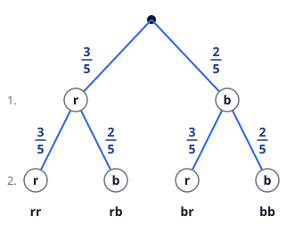

Baumdiagramm
Mit einem KI-Tutor lernen
Ein KI-Tutor erklärt dir diese Seite und hilft dir bei den Aufgaben. Wähl deinen Assistenten:
Mit Claude öffnen Mit ChatGPT öffnen Mit Mistral Vibe öffnen
Du nutzt dein eigenes Konto beim Anbieter. Der Assistent ist kein Angebot von lernapps.net: lernapps liefert nur Inhalte und Aufgaben. Die Wahl gilt für alle Seiten, nur auf diesem Gerät.
Ziel: Ich kann ein Baumdiagramm mit allen Wahrscheinlichkeiten zeichnen. Jeder Ast trägt eine Wahrscheinlichkeit, wie du sie auf der vorigen Seite berechnet hast.
Probier zuerst
Aufgabe
Lösung
Richtige Antwort: 4
Möglich sind KK, KZ, ZK und ZZ, also 4 Ergebnisse.
Ein Ast für jedes Ergebnis
Zwei Würfe nacheinander sind ein zweistufiger Zufallsversuch. Ein Baumdiagramm zeigt ihn von oben nach unten. Vom Startpunkt geht für jedes Ergebnis des 1. Wurfs ein Ast ab. Am Ende jedes Astes beginnt der 2. Wurf mit neuen Ästen. An jeden Ast schreibst du seine Wahrscheinlichkeit.

Jeder Weg von oben nach unten heißt Pfad. Die 4 Pfade sind die 4 Ergebnisse aus der Aufgabe oben.
Quelle: eigene Zeichnung. Lizenz: CC-BY-4.0.Ein Wurf endet sicher mit K oder mit Z. Darum ergeben die Äste, die von einem Punkt (einem Knoten) abgehen, zusammen 1:
Eine Wahrscheinlichkeit kannst du als Bruch, als Dezimalzahl oder in Prozent schreiben: 1/4 = 0,25 = 25 %. Zusammen 1 heißt dann zusammen 100 %.
Ein Beispiel
Urne mit Zurücklegen
In einer Urne liegen 3 rote (r) und 2 blaue (b) Kugeln. Du ziehst eine, legst sie zurück und ziehst noch einmal. Beim 1. Zug ist und . Weil die Kugel zurückkommt, sieht die Urne beim 2. Zug genauso aus: An der 2. Stufe stehen wieder dieselben Brüche.

An jedem Knoten gehen ein Ast r und ein Ast b ab.
Quelle: eigene Zeichnung. Lizenz: CC-BY-4.0.Probe – An jedem Knoten ergeben die Äste zusammen 1. Der Baum ist vollständig beschriftet.
Zusammen immer 1
Merke
Prüfe an jedem Knoten: Die Wahrscheinlichkeiten der abgehenden Äste ergeben zusammen genau 1. Zwei Äste heißen nicht „je 1/2“ – das gilt nur, wenn beide Ergebnisse gleich wahrscheinlich sind. Und KZ und ZK sind zwei verschiedene Pfade.
Jetzt du
Aufgabe
Lösung
2/5
2/5 gehört zu Rot. Der Ast führt aber zu b.
1/2
Es gibt mehr blaue als rote Kugeln, die Farben sind nicht gleich wahrscheinlich.
3/5 richtige Antwort
Die Kugel wurde zurückgelegt, also sind wieder 3 von 5 Kugeln blau.
Mit Zurücklegen ist die Urne bei jedem Zug gleich, und 2/5 + 3/5 = 1.
Aufgabe
Drei Beispielaufgaben, jede mit ihrer Lösung:
Aufgabe Nr. 1
Ein geworfener Flaschendeckel landet mit der Wahrscheinlichkeit 90 % mit der Öffnung nach oben. Im Baumdiagramm gehen zwei Äste ab: „oben“ und „nicht oben“. Welche Wahrscheinlichkeit gehört an „nicht oben“? Gib sie in Prozent an.
Tipp
Die Äste an einem Knoten ergeben zusammen 1, also 100 %.
Lösung
- Am Ast „oben“ stehen 90 %. Beide Äste zusammen ergeben 100 %.
- 100 % − 90 % = 10 %
Richtige Antwort: 10 %
Aufgabe Nr. 2
Ein geworfener Flaschendeckel landet mit der Wahrscheinlichkeit 70 % mit der Öffnung nach oben. Im Baumdiagramm gehen zwei Äste ab: „oben“ und „nicht oben“. Welche Wahrscheinlichkeit gehört an „nicht oben“? Gib sie in Prozent an.
Tipp
Die Äste an einem Knoten ergeben zusammen 1, also 100 %.
Lösung
- Am Ast „oben“ stehen 70 %. Beide Äste zusammen ergeben 100 %.
- 100 % − 70 % = 30 %
Richtige Antwort: 30 %
Aufgabe Nr. 3
Ein geworfener Flaschendeckel landet mit der Wahrscheinlichkeit 20 % mit der Öffnung nach oben. Im Baumdiagramm gehen zwei Äste ab: „oben“ und „nicht oben“. Welche Wahrscheinlichkeit gehört an „nicht oben“? Gib sie in Prozent an.
Tipp
Die Äste an einem Knoten ergeben zusammen 1, also 100 %.
Lösung
- Am Ast „oben“ stehen 20 %. Beide Äste zusammen ergeben 100 %.
- 100 % − 20 % = 80 %
Richtige Antwort: 80 %
Aufgabe
Lösung
Richtige Antwort: Die Aussage stimmt nicht.
Zum Addieren bringst du die Brüche auf den Hauptnenner 12 (kennst du aus Klasse 6; zum Wiederholen: Seite „Brüche addieren und subtrahieren“ im Kapitel Bruchrechnung). 1/2 + 1/3 + 1/4 = 6/12 + 4/12 + 3/12 = 13/12. Das ist mehr als 1.
Aufgabe
Drei Beispielaufgaben, jede mit ihrer Lösung:
Aufgabe Nr. 1
Du wirfst eine Münze und drehst danach ein Glücksrad mit 4 gleich großen Feldern. Wie viele Pfade hat das vollständige Baumdiagramm?
Tipp
Zeichne die 1. Stufe. Wie viele Äste hängen an jedem ihrer Enden?
Lösung
- 1. Stufe: 2 Äste (K und Z). An jedem Ende hängen 4 Äste für das Glücksrad.
- 2 · 4 = 8 Pfade.
Richtige Antwort: 8
Aufgabe Nr. 2
Du wirfst eine Münze und drehst danach ein Glücksrad mit 5 gleich großen Feldern. Wie viele Pfade hat das vollständige Baumdiagramm?
Tipp
Zeichne die 1. Stufe. Wie viele Äste hängen an jedem ihrer Enden?
Lösung
- 1. Stufe: 2 Äste (K und Z). An jedem Ende hängen 5 Äste für das Glücksrad.
- 2 · 5 = 10 Pfade.
Richtige Antwort: 10
Aufgabe Nr. 3
Du wirfst eine Münze und drehst danach ein Glücksrad mit 8 gleich großen Feldern. Wie viele Pfade hat das vollständige Baumdiagramm?
Tipp
Zeichne die 1. Stufe. Wie viele Äste hängen an jedem ihrer Enden?
Lösung
- 1. Stufe: 2 Äste (K und Z). An jedem Ende hängen 8 Äste für das Glücksrad.
- 2 · 8 = 16 Pfade.
Richtige Antwort: 16
Aufgabe
Lösung
An jedem Knoten T 3/8 und N 5/8 richtige Antwort
Größer als 5 sind 6, 7 und 8: 3 von 8 Feldern, bei jedem Drehen.
An jedem Knoten T 1/2 und N 1/2
T und N sind nicht gleich wahrscheinlich: N hat mehr Felder.
1. Stufe T 3/8 und N 5/8, 2. Stufe T 3/16 und N 5/16
3/16 und 5/16 ergeben zusammen nur 1/2, nicht 1.
Jede Stufe ist „günstige durch alle“: T 3/8, N 5/8.
Als Nächstes rechnest du mit den Ästen deines Baums die Wahrscheinlichkeit eines ganzen Pfades aus.
Fehler gefunden oder eine Idee für diese App?